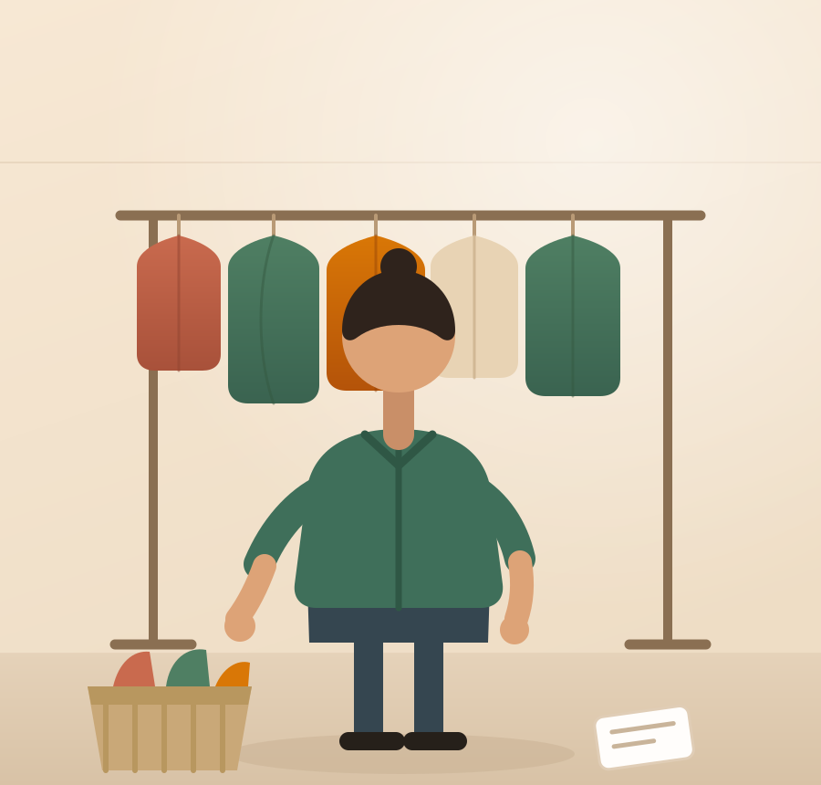

Check the plan
Does it fit today's schedule and the weather you'll actually be standing in?
The smart clothing checklist
QuickTriage runs any item you are holding through three fast checks — plan, fit, and confidence. Fifteen seconds per item, and the debate is over before it starts.

All three checks passed — wear itHow it works
Each check is a yes-or-no question with a line of context. The order matters: the cheapest dealbreakers come first, so you rarely need all three.
Does it fit today's schedule and the weather you'll actually be standing in?
Right size, clean, ready to wear — nothing that needs mending before you can leave.
Would you want to change out of it by lunchtime? Then you already know the answer.
Why it works
Decision fatigue is real. A short written checklist replaces the mood you happen to be in with the same three questions every time.
The first check exists purely to catch the item you want because it is cheap, not because it works.
"I have three of these already."
Collar, armpits, zippers, seams. In a dim ukay-ukay aisle you need the prompt, not sharper eyes.
"Checked in daylight, not in the fitting room."
A verdict appears at the end of every item. No lingering maybe pile, no re-deciding tomorrow.
"Two noes and it's back on the rack."
Open a session and run it through the three checks. It takes about fifteen seconds.
Start a session